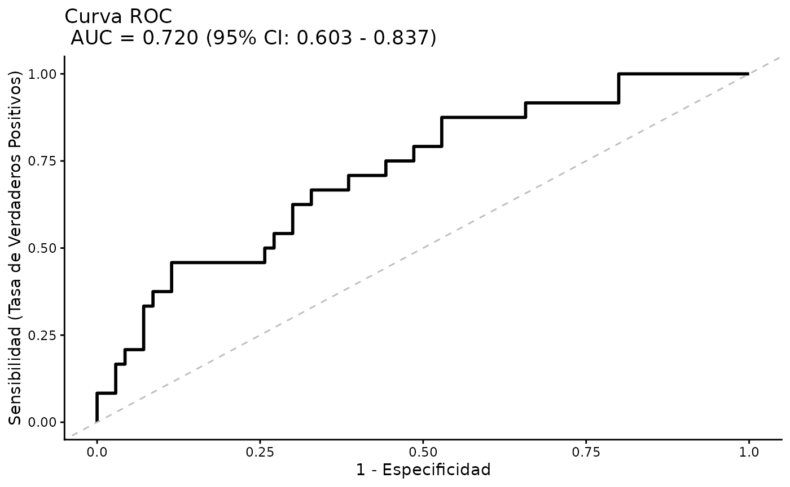

Introducción a BioEstatR
Pedro Femia Marzo, Miguel Angel Luque Fernandez
2026-11-22
BioEstatR-overview.Rmd
library(BioEstatR)
#> --------------------------------------------------------------
#> BioEstatR
#> Biostatistics Routines in R
#>
#> Authors: Pedro Femia*, Miguel Angel Luque Fernandez
#> Biostatistics Faculty of Medicine - University of Granada
#>
#> * Contacto: pfemia@ugr.es, mluquefe@ugr.es
#> --------------------------------------------------------------
data(osteo)Introducción
Este paquete proporciona una colección de rutinas estadísticas automatizadas para el análisis descriptivo, y la estadística inferencial clásica, desarrolladas como soporte para el libro Matemática Estadística Médica con R.
Todas las funciones han sido actualizadas con referencias científicas a la literatura estadística fundamental para apoyar su uso y metodología.
En la versión 1.0.2 se han corregido varios procedimientos
inferenciales (el valor p del chi-cuadrado sin corrección por
continuidad en tabla2x2, los intervalos exactos de
Clopper-Pearson y Garwood-Poisson en sus casos frontera) y se ha
mejorado la robustez de rls, rlm y
nl. Véase NEWS.md para el detalle
completo.
En la versión 1.0.3 se incorporan tres funciones nuevas de análisis
descriptivo: descriptiva, forma y
posicion.
Uso
Análisis descriptivo
descriptiva es una rutina global que resume un vector o
un data.frame completo. Detecta automáticamente qué
variables son cuantitativas y cuáles cualitativas, y adapta la salida a
cada tipo: para las cuantitativas devuelve las medidas de tendencia
central y de dispersión (incluido el coeficiente de variación), los
cuantiles, el rango intercuartílico y el número de valores atípicos;
para las cualitativas, la tabla de frecuencias.
# Descriptiva completa de varias variables del conjunto de datos
descriptiva(x = osteo[, c("edad", "imc", "hba1c")], decs = 2)
#>
#> # Analisis descriptivo ---
#> Observaciones: 94
#>
#> ## Variables cuantitativas ---
#>
#> ### edad ---
#> n = 94 faltantes = 0
#> media = 30.19 dt = 9.37 ee = 0.97
#> CV = 31.02%
#> mediana = 28.00 Q1 = 22.25 Q3 = 35.00
#> min = 18.00 max = 56.00 RIC = 12.75
#> asimetria = 0.93 curtosis = 0.16
#> valores atipicos (Tukey 1.5 x RIC) = 1
#>
#> ### imc ---
#> n = 94 faltantes = 0
#> media = 23.92 dt = 3.75 ee = 0.39
#> CV = 15.67%
#> mediana = 23.22 Q1 = 21.34 Q3 = 25.54
#> min = 18.07 max = 37.33 RIC = 4.20
#> asimetria = 1.22 curtosis = 1.46
#> valores atipicos (Tukey 1.5 x RIC) = 6
#>
#> ### hba1c ---
#> n = 94 faltantes = 0
#> media = 8.56 dt = 1.80 ee = 0.19
#> CV = 21.00%
#> mediana = 8.40 Q1 = 7.43 Q3 = 9.70
#> min = 4.60 max = 13.80 RIC = 2.27
#> asimetria = 0.37 curtosis = 0.35
#> valores atipicos (Tukey 1.5 x RIC) = 1Se pueden añadir los intervalos de confianza para la media y la prueba de normalidad.
descriptiva(x = osteo$imc, ic = TRUE, normal = TRUE, decs = 2)
#>
#> # Analisis descriptivo ---
#> Observaciones: 94
#>
#> ## Variables cuantitativas ---
#>
#> ### osteo$imc ---
#> n = 94 faltantes = 0
#> media = 23.92 dt = 3.75 ee = 0.39
#> CV = 15.67%
#> IC 95% = (23.15, 24.69)
#> mediana = 23.22 Q1 = 21.34 Q3 = 25.54
#> min = 18.07 max = 37.33 RIC = 4.20
#> asimetria = 1.22 curtosis = 1.46
#> valores atipicos (Tukey 1.5 x RIC) = 6
#> normalidad (Shapiro-Wilk) p = 0.000Si se indica un factor de agrupación, la descriptiva de las variables cuantitativas se segmenta por sus niveles.
descriptiva(x = osteo$imc, f = osteo$osteo_cue, decs = 2)
#>
#> # Analisis descriptivo ---
#> Observaciones: 94
#> Agrupacion: No, Sí
#>
#> ## Variables cuantitativas ---
#>
#> ### osteo$imc ---
#> n = 94 faltantes = 0
#> media = 23.92 dt = 3.75 ee = 0.39
#> CV = 15.67%
#> mediana = 23.22 Q1 = 21.34 Q3 = 25.54
#> min = 18.07 max = 37.33 RIC = 4.20
#> asimetria = 1.22 curtosis = 1.46
#> valores atipicos (Tukey 1.5 x RIC) = 6
#> por grupos:
#> No: n = 70, media = 24.45, dt = 4.01
#> Sí: n = 24, media = 22.37, dt = 2.26Medidas de forma
forma devuelve los coeficientes de asimetría y de
curtosis muestrales corregidos (insesgados), con sus errores típicos, el
contraste z de significación y la prueba de normalidad. Los valores
coinciden con e1071::skewness(type = 2) y
e1071::kurtosis(type = 2), es decir, con la definición que
usan SPSS y Excel.
forma(x = osteo$imc, decs = 2)
#>
#> # Medidas de forma ---
#>
#> n = 94 media = 23.92 dt = 3.75
#>
#> Asimetria (g1) = 1.22 (error tipico = 0.25)
#> Interpretacion: asimetria positiva (cola derecha)
#> z = 4.90 p = 0.000 (asimetria significativa)
#>
#> Curtosis (g2) = 1.46 (error tipico = 0.49)
#> Interpretacion: leptocurtica (mas apuntada que la normal)
#> z = 2.96 p = 0.003 (curtosis significativa)
#>
#> Prueba de normalidad (Shapiro-Wilk): p = 0.000 -> se rechaza la normalidadMedidas de posición y valores atípicos
posicion calcula los cuantiles que se le pidan
(cuartiles, deciles o percentiles), el rango intercuartílico y detecta
los valores atípicos leves y graves por el criterio de Tukey (1,5 y 3
veces el rango intercuartílico), de forma coherente con
boxplot.stats.
posicion(x = osteo$imc, decs = 2)
#>
#> # Medidas de posicion ---
#>
#> n = 94
#>
#> Cuantiles (tipo 7):
#> 0% = 18.07
#> 25% = 21.34
#> 50% = 23.22
#> 75% = 25.54
#> 100% = 37.33
#>
#> Rango intercuartilico (RIC) = 4.20
#> Vallas de Tukey (1.5 x RIC): [15.04, 31.84]
#> Vallas extremas (3.0 x RIC): [8.75, 38.14]
#>
#> Valores atipicos leves (n = 6): 32.32, 32.46, 37.33, 32.47, 34.26, 32.00
#> Valores atipicos graves (n = 0)Regresión Lineal Simple
# Ejemplo de regresión lineal simple
rls(imc ~ peso, data = osteo, grf=F)
#>
#> Regresión lineal simple
#> ----------------------------------------------------------------
#> # Información muestral ---
#>
#> variable n media dt Min Max Rango
#> 1 imc 94 23.921 3.748 18.07 37.333 19.264
#> 2 peso 94 63.839 11.804 44.60 99.000 54.400
#>
#> Cov(imc,peso) = 35.482
#>
#> # Correlación de Pearson ---
#>
#> r IC_inf IC_sup gl texp sig
#> 0.802 0.716 0.864 92 12.876 < 0.001
#>
#> # Modelo lineal ---
#>
#> Modelo: imc ~ peso
#> R² = 0.643
#> S²residual = 5.068
#> :
#>
#> Coef estim se ic_inf ic_sup texp sig
#> 1 (Constante) 7.664 1.284 5.115 10.214 5.971 <0.001
#> 2 peso 0.255 0.020 0.215 0.294 12.876 <0.001
#>
#> # Distribución residual ---
#> Error estándar residual: 2.251
#> res zres
#> min -5.763 -2.620
#> Q1 -1.533 -0.685
#> Q2 -0.512 -0.230
#> Q3 1.426 0.649
#> max 8.279 3.757
#>
#> Test de normalidad residual (Shapiro-Wilk):
#> w =0.96, p= 0.005Regresión Lineal Múltiple
# Ejemplo de regresión lineal múltiple
new_data <- data.frame(peso = c(70, 80), talla = c(170, 180))
rlm(imc ~ peso + talla, data = osteo, pred = new_data, grf=F)
#>
#> Regresión lineal múltiple
#> ----------------------------------------------------------------
#> # Información muestral ---
#>
#> Variable n Media DT Min Max
#> 1 imc 94 23.921 3.748 18.07 37.333
#> 2 peso 94 63.839 11.804 44.60 99.000
#> 3 talla 94 163.181 8.795 144.00 190.000
#>
#> # Modelo lineal ---
#>
#> Modelo : imc ~ peso + talla
#> R² = 0.988 (R² ajustado = 0.988 )
#> S²residual = 0.17
#>
#> Coeficientes del modelo :
#>
#> Termino Estimacion Error_Std IC_inf IC_sup t_exp sig
#> 1 (Intercept) 48.884 0.835 47.225 50.543 58.522 < 0.001
#> 2 peso 0.380 0.004 0.371 0.389 86.971 < 0.001
#> 3 talla -0.302 0.006 -0.313 -0.290 -51.431 < 0.001
#>
#> # Pronósticos con el modelo ---
#> Pronosticos puntuales y bandas al 95 % de confianza para
#> promedios IC(m), y para una nueva observación: IC(obs)
#>
#> peso talla Puntual IC_m_inf IC_m_sup IC_obs_inf IC_obs_sup
#> 1 70 170 24.20513 24.09751 24.31276 23.37811 25.03216
#> 2 80 180 24.98938 24.80351 25.17525 24.14859 25.83018
#>
#> # Distribución residual ---
#> Error estándar residual: 0.413
#> Residuos Res_Est
#> min -1.411 -3.587
#> Q1 -0.180 -0.442
#> Q2 0.042 0.102
#> Q3 0.186 0.456
#> max 1.773 4.620
#>
#> Test de normalidad residual (Shapiro-Wilk):
#> w = 0.926 , < 0.001Regresión Logística Simple
# Ejemplo de regresión logística simple
rlogits(osteo_cue ~ imc, data = osteo)
#> Waiting for profiling to be done...
#>
#> Regresión logística simple
#> ----------------------------------------------------------------
#> # Información muestral ---
#>
#> Tamaño muestral (N inicial) : 94
#> Tamaño muestral tras eliminar valores perdidos (Casos completos) : 94
#> Mínima frecuencia de eventos (n efectivo) : 24
#>
#> # Distribución de la variable respuesta (osteo_cue) ---
#>
#> Categoria n Porcentaje
#> 1 No 70 74.468
#> 2 Sí 24 25.532
#>
#> # Modelo logístico --- ---
#>
#> Modelo : osteo_cue ~ imc
#> Devianza residual: 100.176 (Nula: 106.804 )
#> AIC: 104.176
#> R² de Nagelkerke: 0.1
#>
#> Test de bondad de ajuste de Hosmer-Lemeshow :
#> X² = 7.041 , gl = 8 , = 0.532
#>
#> Capacidad discriminante :
#> AUC (Area bajo la curva ROC) = 0.649
#>
#> Coeficientes del modelo :
#>
#> Termino Estimacion Error_Std z_exp sig OR OR_inf OR_sup
#> 1 (Intercept) 3.620 2.044 1.771 = 0.077 37.348 0.937 3055.247
#> 2 imc -0.202 0.089 -2.256 = 0.024 0.817 0.672 0.957Regresión Logística Múltiple
# Ejemplo de regresión logística múltiple
rlogitm(osteo_cue ~ imc + edad + tevol, data = osteo, grf=T)
#> Waiting for profiling to be done...
#>
#> Regresión logística multiple
#> ----------------------------------------------------------------
#> # Información muestral ---
#>
#> Tamaño muestral (N inicial) : 94
#> Tamaño muestral tras eliminar valores perdidos (Casos completos) : 94
#> Mínima frecuencia de eventos (n efectivo) : 24
#>
#> # Distribución de la variable respuesta (osteo_cue) ---
#>
#> Categoria n Porcentaje
#> 1 No 70 74.468
#> 2 Sí 24 25.532
#>
#> # Modelo logístico --- ---
#>
#> Modelo : osteo_cue ~ imc + edad + tevol
#> Devianza residual: 94.571 (Nula: 106.804 )
#> AIC: 102.571
#> R² de Nagelkerke: 0.18
#>
#> Test de bondad de ajuste de Hosmer-Lemeshow :
#> X² = 10.607 , gl = 8 , = 0.225
#>
#> Capacidad discriminante :
#> AUC (Area bajo la curva ROC) = 0.72
#>
#> Coeficientes del modelo :
#>
#> Termino Estimacion Error_Std z_exp sig OR OR_inf OR_sup
#> 1 (Intercept) 3.570 2.122 1.683 = 0.092 35.502 0.776 3462.488
#> 2 imc -0.254 0.099 -2.555 = 0.011 0.776 0.624 0.925
#> 3 edad 0.015 0.035 0.436 = 0.663 1.015 0.948 1.088
#> 4 tevol 0.063 0.034 1.842 = 0.066 1.065 0.997 1.141
#> Scale for x is already present.
#> Adding another scale for x, which will replace the existing scale.
Intervalos de confianza y tablas de contingencia
IC para una proporción binomial
# Comparación de métodos: exacto, Wilson, Wald y Agresti-Coull
icp(x = 25, n = 210)
#>
#> Intervalo de confianza para una proporción binomial
#> ---------------------------------------------------
#>
#> Información muestral:
#> Tamaño de muestra: n = 210
#> Estimación puntual clásica: p=x/n = 0.119, q=(1-p)=0.881
#> Casos observados: x = 25
#>
#> # Método exacto (Clooper-Pearson):
#> Pseudo-estimación puntual: p' = 0.1246, q'=(1-p')=0.8754
#> 95%-IC(π): (0.0785, 0.1707)
#> Semiamplitud: 0.0461
#>
#> # Método de Wilson (con cpc):
#> Pseudo-estimación puntual: p' = 0.1263, q'=(1-p')=0.8737
#> 95%-IC(π): (0.08, 0.1725)
#> Semiamplitud: 0.0463
#>
#> # Método de Wald (con cpc):
#> Estimación puntual (clásica): p=x/n = 0.119, q=(1-p)=0.881
#> 95%-IC(π): (0.0729, 0.1652)
#> Precisión: 0.0462
#>
#> # Método de Wald ajustado (Agresti-Coull):
#> Estimación puntual: p=(x+2)/(n+4) = 0.1262, q=(1-p)=0.8738
#> 95%-IC(π): (0.0817, 0.1707)
#> Precisión: 0.0445IC para el parámetro de una Poisson
# Método exacto (Garwood) y aproximación normal
icl(x = 25, n = 210)
#>
#> Intervalo de confianza bilateral para el parámetro λ de una VA con distribución de Poisson
#> ----------------------------------------------------------------------------------------------
#> Información muestral:
#> Se indica una única observación muestral 210
#> Tamaño muestral: n = 210
#> Media observada: m = 25
#>
#> Estimación:
#> [1] Método exacto:
#> 95 %-IC(λ): ( 24.3283 , 25.6856 )
#> Semiamplitud del intervalo: 0.6787
#>
#> [2] Aproximación a la normal (transformación de la raiz):
#> Validez de la aproximación: Σx = 5250 ⩾ 15 (válida)
#> 95 %-IC(λ): ( 24.3283 , 25.6857 )
#> Precisión obtenida: 0.6787Tablas de contingencia 2x2
# Análisis completo de una tabla 2x2 en estudio transversal
tabla2x2(o = c(20, 26, 60, 294), estudio = "T", tablas = c("F", "S"))
#>
#> # Análisis de tablas 2x2
#> # ----------------------
#>
#> # Frecuencias observadas
#> C1 C2 Total
#> F1 20 26 46
#> F2 60 294 354
#> Total 80 320 400
#>
#>
#> # Test Chi-cuadrado para un estudio transversal
#>
#> χ² = 17.903, gl = 1, p < 0.001, (cpc = 0.5)
#> Validez: Frecuencia mínima esperada = 9.20 > 3.9
#>
#> Test exacto de Fisher (bilateral): p < 0.001
#>
#> --- Otros criterios χ²:
#> χ² = 17.907, gl = 1, p < 0.001, (sin cpc)
#> χ² = 16.287, gl = 1, p < 0.001, (cpc de Yates = 200.00)
#>
#> # Residuos estandarizados
#> C1 C2
#> F1 4.232 -4.232
#> F2 -4.232 4.232
#>
#> # Porcentajes por filas
#> C1 C2 Total
#> F1 0.435 0.565 1.000
#> F2 0.169 0.831 1.000
#> Total 0.200 0.800 1.000
#>
#> # Estimación de la prevalenciaπ en un estudio transversal
#> Método de Wald ajustado:
#> p=0.119; 95%-IC(π)=(0.087, 0.150)
#>
#> # Medidas de asociación para un estudio transversal
#> [!] Las medidas de riesgo se calculan como riesgo de la categoría
#> en la 1a columna (frente a la 2a) para la categoría en la 1a
#> fila (frente a la 2a)
#>
#> Riesgo absoluto (diferencia de Berkson; método de Agresti-Caffo):
#> d=0.169; 95%-IC(d)=(0.073, 0.271)
#>
#> Riesgo relativo:
#> Rr=3.077; 95%-IC(Rr)=(1.818, 5.169)
#>
#> Riesgo atribuible:
#> Ra=0.293; 95%-IC(Ra)= (0.104, 0.443)
#>
#> Razón del producto cruzado (odds ratio):
#> OR=3.769; 95%-IC(OR)= (1.987, 7.137)Para más información, consulte la documentación individual de cada
función mediante ?funcion.